uedcli · reference solutions · batch 1 of 5 · UNATCO HQ
Reference solutions to validate — per-aspect, diff-generated.
Each task is collapsed by default — open one and the previous one closes. Inside, each aspect of the change is its own collapsible scenario, showing the fully-correct outcome with just that aspect's actors highlighted. Click any picture to enlarge; arrows cycle through that scenario's images; the enlarged view always shows its caption.
Every picture is generated, never hand-built: each scenario is backed by a REAL diff -u (not a custom format) between the baseline and the fully-correct trunk, over each actor's normalized state (brush corners, or Location). Grading is separate from this display grouping: a flat per-task oracle (oracle/<task>.json) classifies each actor as an update (an absolute target — a task-pinned delta, or "= baseline"), an anchor (must match a SPECIFIC other actor's actual delta — the wall volume it's physically attached to, verified per-actor, not one shared number), or (documented, not yet needed) create/delete. check_trunk.py grades any trunk against it.
Orientation, top-down plans (matching UnrealEd's own axis convention): East = right edge of the image, West = left, North = up, South = down. A small compass is burned into the top-left corner of every plan below as a direct check.


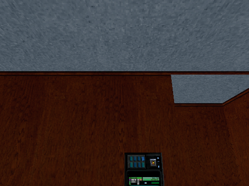


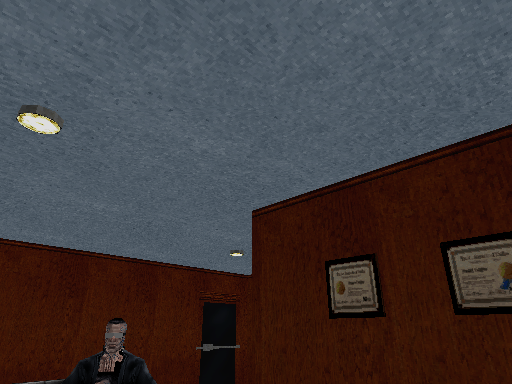


Per-aspect scenarios — click to expand
Like the east wall, the ceiling spans two wall volumes sharing one surface. Both must rise together, or the ceiling gets a step in it.
![[CORRECT] Like the east wall, the ceiling spans two wall volumes sharing one surface. Both must rise together, or the ceiling gets a step in it. (highlighted: Brush418, Brush420)](img/unatco_ceiling/ceil.png)
Diff — real diff -u output this picture is generated from (diffs/unatco_ceiling/ceil.diff)
--- before/t2_ceil +++ after/t2_ceil @@ -1,9 +1,9 @@ Brush418: 8 vertices coord polys refs -(128,-288,416) 0,3,5 3 -(448,-288,416) 0,3,4 3 -(448,64,416) 0,2,4 3 -(128,64,416) 0,2,5 3 +(128,-288,464) 0,3,5 3 +(448,-288,464) 0,3,4 3 +(448,64,464) 0,2,4 3 +(128,64,464) 0,2,5 3 (128,64,240) 1,2,5 3 (448,64,240) 1,2,4 3 (448,-288,240) 1,3,4 3 @@ -11,10 +11,10 @@ Brush420: 8 vertices coord polys refs -(-96,64,416) 0,3,5 3 -(448,64,416) 0,3,4 3 -(448,304,416) 0,2,4 3 -(-96,304,416) 0,2,5 3 +(-96,64,464) 0,3,5 3 +(448,64,464) 0,3,4 3 +(448,304,464) 0,2,4 3 +(-96,304,464) 0,2,5 3 (-96,304,240) 1,2,5 3 (448,304,240) 1,2,4 3 (448,64,240) 1,3,4 3
Three recessed light panels and two corner trim caps are set into the ceiling, split across both wall volumes: most sit over the south half (Brush418), one panel sits over the north half (Brush420). Each rises with its own half.
![[CORRECT] Three recessed light panels and two corner trim caps are set into the ceiling, split across both wall volumes: most sit over the south half (Brush418), one panel sits over the north half (Brush420). Each rises with its own half. (highlighted: Brush285, Brush295, Brush284, Brush132, Brush74)](img/unatco_ceiling/fixtures.png)

Diff — real diff -u output this picture is generated from (diffs/unatco_ceiling/fixtures.diff)
--- before/t2_fixtures +++ after/t2_fixtures @@ -1,78 +1,78 @@ Brush285: 16 vertices coord polys refs -(283.313585,48,412) 0,1,8 3 -(283.313585,48,416) 0,1,9 3 -(288,43.313581,416) 0,7,9 3 -(288,43.313581,412) 0,7,8 3 -(276.686165,48,412) 1,2,8 3 -(276.686165,48,416) 1,2,9 3 -(272,43.313581,412) 2,3,8 3 -(272,43.313581,416) 2,3,9 3 -(272,36.686223,412) 3,4,8 3 -(272,36.686223,416) 3,4,9 3 -(276.686165,32,412) 4,5,8 3 -(276.686165,32,416) 4,5,9 3 -(283.313585,32,412) 5,6,8 3 -(283.313585,32,416) 5,6,9 3 -(288,36.686223,412) 6,7,8 3 -(288,36.686223,416) 6,7,9 3 +(283.313585,48,460) 0,1,8 3 +(283.313585,48,464) 0,1,9 3 +(288,43.313581,464) 0,7,9 3 +(288,43.313581,460) 0,7,8 3 +(276.686165,48,460) 1,2,8 3 +(276.686165,48,464) 1,2,9 3 +(272,43.313581,460) 2,3,8 3 +(272,43.313581,464) 2,3,9 3 +(272,36.686223,460) 3,4,8 3 +(272,36.686223,464) 3,4,9 3 +(276.686165,32,460) 4,5,8 3 +(276.686165,32,464) 4,5,9 3 +(283.313585,32,460) 5,6,8 3 +(283.313585,32,464) 5,6,9 3 +(288,36.686223,460) 6,7,8 3 +(288,36.686223,464) 6,7,9 3 Brush295: 16 vertices coord polys refs -(283.313585,-208,412) 0,1,8 3 -(283.313585,-208,416) 0,1,9 3 -(288,-212.686419,416) 0,7,9 3 -(288,-212.686419,412) 0,7,8 3 -(276.686165,-208,412) 1,2,8 3 -(276.686165,-208,416) 1,2,9 3 -(272,-212.686419,412) 2,3,8 3 -(272,-212.686419,416) 2,3,9 3 -(272,-219.313777,412) 3,4,8 3 -(272,-219.313777,416) 3,4,9 3 -(276.686165,-224,412) 4,5,8 3 -(276.686165,-224,416) 4,5,9 3 -(283.313585,-224,412) 5,6,8 3 -(283.313585,-224,416) 5,6,9 3 -(288,-219.313777,412) 6,7,8 3 -(288,-219.313777,416) 6,7,9 3 +(283.313585,-208,460) 0,1,8 3 +(283.313585,-208,464) 0,1,9 3 +(288,-212.686419,464) 0,7,9 3 +(288,-212.686419,460) 0,7,8 3 +(276.686165,-208,460) 1,2,8 3 +(276.686165,-208,464) 1,2,9 3 +(272,-212.686419,460) 2,3,8 3 +(272,-212.686419,464) 2,3,9 3 +(272,-219.313777,460) 3,4,8 3 +(272,-219.313777,464) 3,4,9 3 +(276.686165,-224,460) 4,5,8 3 +(276.686165,-224,464) 4,5,9 3 +(283.313585,-224,460) 5,6,8 3 +(283.313585,-224,464) 5,6,9 3 +(288,-219.313777,460) 6,7,8 3 +(288,-219.313777,464) 6,7,9 3 Brush284: 16 vertices coord polys refs -(43.313585,188,412) 0,1,8 3 -(43.313585,188,416) 0,1,9 3 -(48,183.313581,416) 0,7,9 3 -(48,183.313581,412) 0,7,8 3 -(36.686165,188,412) 1,2,8 3 -(36.686165,188,416) 1,2,9 3 -(32,183.313581,412) 2,3,8 3 -(32,183.313581,416) 2,3,9 3 -(32,176.686223,412) 3,4,8 3 -(32,176.686223,416) 3,4,9 3 -(36.686165,172,412) 4,5,8 3 -(36.686165,172,416) 4,5,9 3 -(43.313585,172,412) 5,6,8 3 -(43.313585,172,416) 5,6,9 3 -(48,176.686223,412) 6,7,8 3 -(48,176.686223,416) 6,7,9 3 +(43.313585,188,460) 0,1,8 3 +(43.313585,188,464) 0,1,9 3 +(48,183.313581,464) 0,7,9 3 +(48,183.313581,460) 0,7,8 3 +(36.686165,188,460) 1,2,8 3 +(36.686165,188,464) 1,2,9 3 +(32,183.313581,460) 2,3,8 3 +(32,183.313581,464) 2,3,9 3 +(32,176.686223,460) 3,4,8 3 +(32,176.686223,464) 3,4,9 3 +(36.686165,172,460) 4,5,8 3 +(36.686165,172,464) 4,5,9 3 +(43.313585,172,460) 5,6,8 3 +(43.313585,172,464) 5,6,9 3 +(48,176.686223,460) 6,7,8 3 +(48,176.686223,464) 6,7,9 3 Brush132: 8 vertices coord polys refs -(448,48,416) 0,3,5 3 -(448,-64,416) 0,3,4 3 -(452,-64,416) 0,2,4 3 -(452,48,416) 0,2,5 3 -(452,48,414) 1,2,5 3 -(452,-64,414) 1,2,4 3 -(448,-64,414) 1,3,4 3 -(448,48,414) 1,3,5 3 +(448,48,464) 0,3,5 3 +(448,-64,464) 0,3,4 3 +(452,-64,464) 0,2,4 3 +(452,48,464) 0,2,5 3 +(452,48,462) 1,2,5 3 +(452,-64,462) 1,2,4 3 +(448,-64,462) 1,3,4 3 +(448,48,462) 1,3,5 3 Brush74: 8 vertices coord polys refs -(448,64,416) 0,3,5 3 -(448,-48,416) 0,3,4 3 -(452,-48,416) 0,2,4 3 -(452,64,416) 0,2,5 3 -(452,64,414) 1,2,5 3 -(452,-48,414) 1,2,4 3 -(448,-48,414) 1,3,4 3 -(448,64,414) 1,3,5 3 +(448,64,464) 0,3,5 3 +(448,-48,464) 0,3,4 3 +(452,-48,464) 0,2,4 3 +(452,64,464) 0,2,5 3 +(452,64,462) 1,2,5 3 +(452,-48,462) 1,2,4 3 +(448,-48,462) 1,3,4 3 +(448,64,462) 1,3,5 3
The niche is its own separate room with its own ceiling. It's expected to keep its own height and not match the office's new one.
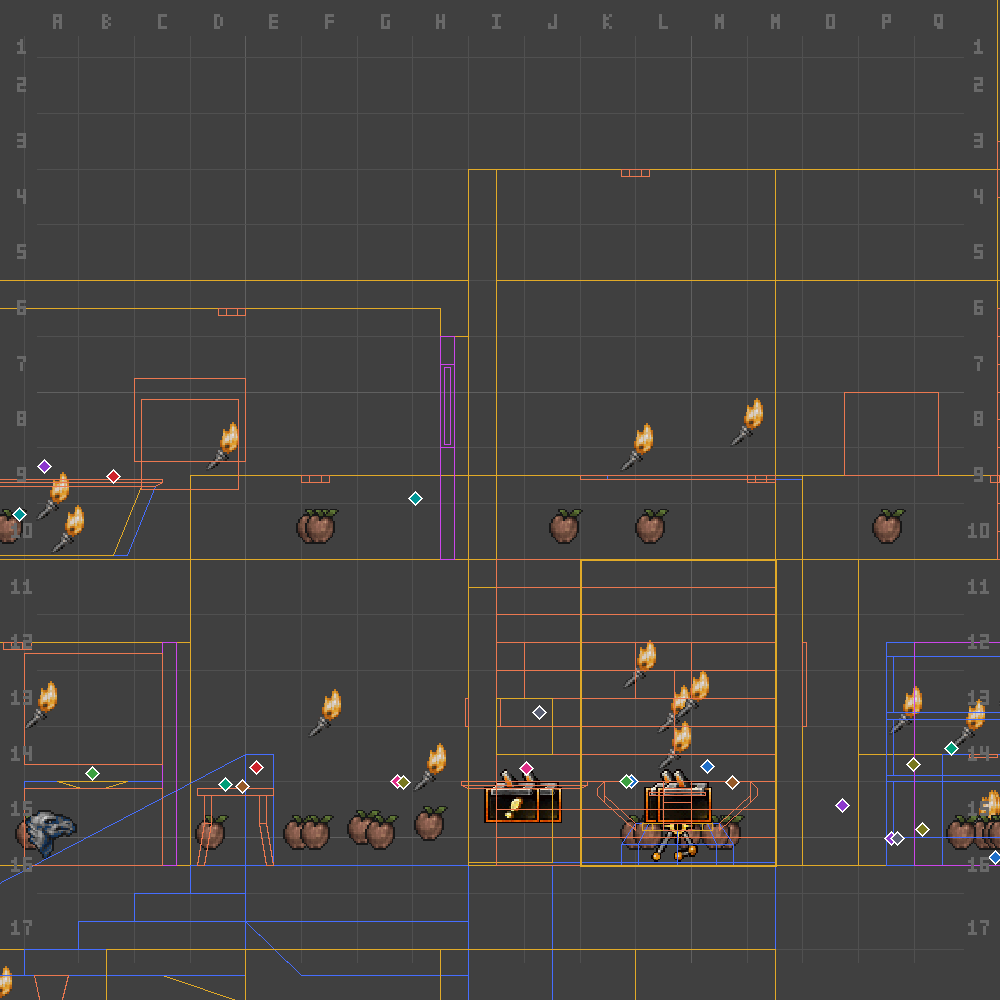
Diff — real diff -u output this picture is generated from (diffs/unatco_ceiling/niche.diff)
Zero-line diff — this aspect asserts these actors are UNCHANGED from the baseline, and they are.
Every light sits the same distance below its ceiling, room-wide — a fixed convention, not a mount to the ceiling surface. They must stay put.
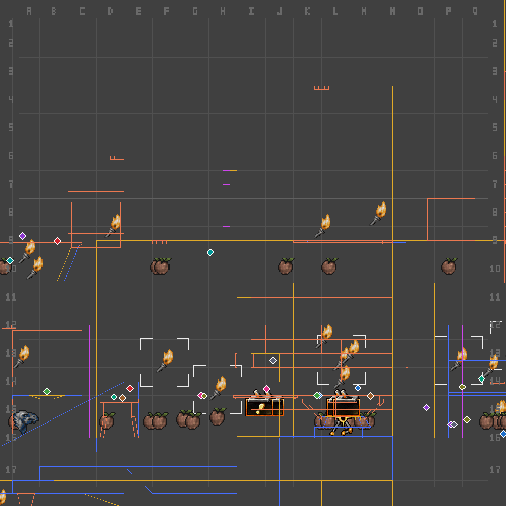
Diff — real diff -u output this picture is generated from (diffs/unatco_ceiling/lights.diff)
Zero-line diff — this aspect asserts these actors are UNCHANGED from the baseline, and they are.

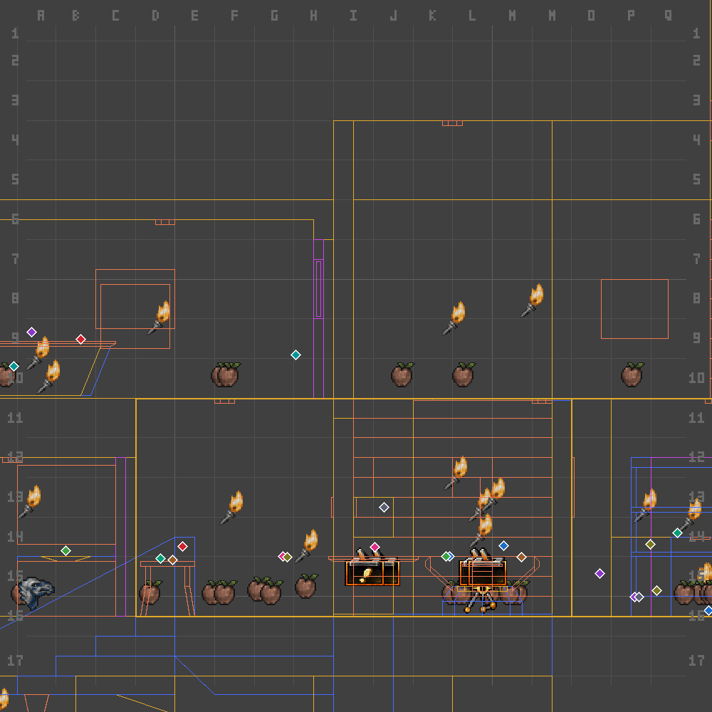

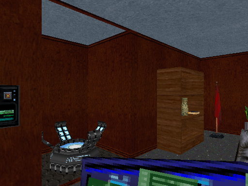


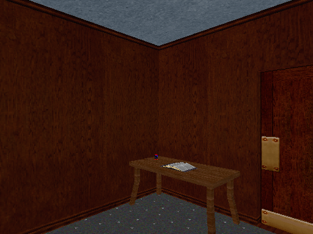
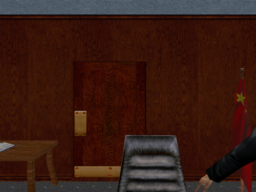

Per-aspect scenarios — click to expand
The office is built from two wall volumes sharing one wall. Both must move out together, or the wall gets a step in it.
![[CORRECT] The office is built from two wall volumes sharing one wall. Both must move out together, or the wall gets a step in it. (highlighted: Brush418, Brush420)](img/unatco_widen/wall.png)
Diff — real diff -u output this picture is generated from (diffs/unatco_widen/wall.diff)
--- before/t1_wall +++ after/t1_wall @@ -1,21 +1,21 @@ Brush418: 8 vertices coord polys refs (128,-288,416) 0,3,5 3 -(448,-288,416) 0,3,4 3 -(448,64,416) 0,2,4 3 +(496,-288,416) 0,3,4 3 +(496,64,416) 0,2,4 3 (128,64,416) 0,2,5 3 (128,64,240) 1,2,5 3 -(448,64,240) 1,2,4 3 -(448,-288,240) 1,3,4 3 +(496,64,240) 1,2,4 3 +(496,-288,240) 1,3,4 3 (128,-288,240) 1,3,5 3 Brush420: 8 vertices coord polys refs (-96,64,416) 0,3,5 3 -(448,64,416) 0,3,4 3 -(448,304,416) 0,2,4 3 +(496,64,416) 0,3,4 3 +(496,304,416) 0,2,4 3 (-96,304,416) 0,2,5 3 (-96,304,240) 1,2,5 3 -(448,304,240) 1,2,4 3 -(448,64,240) 1,3,4 3 +(496,304,240) 1,2,4 3 +(496,64,240) 1,3,4 3 (-96,64,240) 1,3,5 3
The wall's own hardware is split across both wall volumes: the switch/recess/most trims sit on the south half (Brush418), the pilaster and its light sit on the north half (Brush420). Each moves with its OWN wall, not a single shared delta.
![[CORRECT] The wall's own hardware is split across both wall volumes: the switch/recess/most trims sit on the south half (Brush418), the pilaster and its light sit on the north half (Brush420). Each moves with its OWN wall, not a single shared delta. (highlighted: Brush670, Brush161, Brush132, Brush203, Brush74, Brush152, Switch6, Brush869, Light14)](img/unatco_widen/fixtures.png)
Diff — real diff -u output this picture is generated from (diffs/unatco_widen/fixtures.diff)
--- before/t1_fixtures +++ after/t1_fixtures @@ -1,116 +1,116 @@ Brush670: 8 vertices coord polys refs -(452,-80,336) 0,3,5 3 -(448,-80,336) 0,3,4 3 -(448,-112,336) 0,2,4 3 -(452,-112,336) 0,2,5 3 -(452,-112,304) 1,2,5 3 -(448,-112,304) 1,2,4 3 -(448,-80,304) 1,3,4 3 -(452,-80,304) 1,3,5 3 +(500,-80,336) 0,3,5 3 +(496,-80,336) 0,3,4 3 +(496,-112,336) 0,2,4 3 +(500,-112,336) 0,2,5 3 +(500,-112,304) 1,2,5 3 +(496,-112,304) 1,2,4 3 +(496,-80,304) 1,3,4 3 +(500,-80,304) 1,3,5 3 Brush161: 8 vertices coord polys refs -(448,-16,284) 0,3,5 3 -(452,-16,288) 0,3,4 3 -(452,0,288) 0,2,4 3 -(448,0,284) 0,2,5 3 -(448,0,280) 1,2,5 3 -(452,0,276) 1,2,4 3 -(452,-16,276) 1,3,4 3 -(448,-16,280) 1,3,5 3 +(496,-16,284) 0,3,5 3 +(500,-16,288) 0,3,4 3 +(500,0,288) 0,2,4 3 +(496,0,284) 0,2,5 3 +(496,0,280) 1,2,5 3 +(500,0,276) 1,2,4 3 +(500,-16,276) 1,3,4 3 +(496,-16,280) 1,3,5 3 Brush132: 8 vertices coord polys refs -(448,48,416) 0,3,5 3 -(448,-64,416) 0,3,4 3 -(452,-64,416) 0,2,4 3 -(452,48,416) 0,2,5 3 -(452,48,414) 1,2,5 3 -(452,-64,414) 1,2,4 3 -(448,-64,414) 1,3,4 3 -(448,48,414) 1,3,5 3 +(496,48,416) 0,3,5 3 +(496,-64,416) 0,3,4 3 +(500,-64,416) 0,2,4 3 +(500,48,416) 0,2,5 3 +(500,48,414) 1,2,5 3 +(500,-64,414) 1,2,4 3 +(496,-64,414) 1,3,4 3 +(496,48,414) 1,3,5 3 Brush203: 8 vertices coord polys refs -(448,48,242) 0,3,5 3 -(448,-64,242) 0,3,4 3 -(452,-64,242) 0,2,4 3 -(452,48,242) 0,2,5 3 -(452,48,240) 1,2,5 3 -(452,-64,240) 1,2,4 3 -(448,-64,240) 1,3,4 3 -(448,48,240) 1,3,5 3 +(496,48,242) 0,3,5 3 +(496,-64,242) 0,3,4 3 +(500,-64,242) 0,2,4 3 +(500,48,242) 0,2,5 3 +(500,48,240) 1,2,5 3 +(500,-64,240) 1,2,4 3 +(496,-64,240) 1,3,4 3 +(496,48,240) 1,3,5 3 Brush74: 8 vertices coord polys refs -(448,64,416) 0,3,5 3 -(448,-48,416) 0,3,4 3 -(452,-48,416) 0,2,4 3 -(452,64,416) 0,2,5 3 -(452,64,414) 1,2,5 3 -(452,-48,414) 1,2,4 3 -(448,-48,414) 1,3,4 3 -(448,64,414) 1,3,5 3 +(496,64,416) 0,3,5 3 +(496,-48,416) 0,3,4 3 +(500,-48,416) 0,2,4 3 +(500,64,416) 0,2,5 3 +(500,64,414) 1,2,5 3 +(500,-48,414) 1,2,4 3 +(496,-48,414) 1,3,4 3 +(496,64,414) 1,3,5 3 Brush152: 8 vertices coord polys refs -(452,-16,280) 0,3,5 3 -(470,-16,264) 0,3,4 3 -(470,0,264) 0,2,4 3 -(452,0,280) 0,2,5 3 -(452,0,276) 1,2,5 3 -(470,0,260) 1,2,4 3 -(470,-16,260) 1,3,4 3 -(452,-16,276) 1,3,5 3 +(500,-16,280) 0,3,5 3 +(518,-16,264) 0,3,4 3 +(518,0,264) 0,2,4 3 +(500,0,280) 0,2,5 3 +(500,0,276) 1,2,5 3 +(518,0,260) 1,2,4 3 +(518,-16,260) 1,3,4 3 +(500,-16,276) 1,3,5 3 -Switch6: (X=450.165802,Y=-87.466599,Z=327.88623) +Switch6: (X=498.165802,Y=-87.466599,Z=327.88623) Brush869: 44 vertices coord polys refs -(440,116,324) 0,11,13 3 -(408,116,324) 0,2,13 3 -(408,204,324) 0,14,15 3 -(440,204,324) 0,11,14 3 -(448,208,240) 1,3,10 3 -(408,208,240) 1,3,17 3 -(408,208,368) 1,20,21 3 -(448,208,368) 1,10,20 3 -(408,116,292) 2,12,13 3 -(408,112,292) 2,16 2 -(408,112,324) 2,29 2 -(448,112,240) 3,4,10 3 -(408,112,240) 3,4,17 3 -(448,112,368) 4,10,20 3 -(408,112,368) 4,20,21 3 -(440,116,288) 5,6,8 3 -(408,116,288) 5,8,18 3 -(408,204,288) 5,9,19 3 -(440,204,288) 5,6,9 3 -(440,116,256) 6,7,8 3 -(440,204,256) 6,7,9 3 -(408,204,256) 7,9,19 3 -(408,116,256) 7,8,18 3 -(440,116,292) 11,12,13 3 -(440,204,292) 11,12,14 3 -(408,204,292) 12,14,15 3 -(408,208,324) 15,29 2 -(408,208,292) 15,16 2 -(408,112,288) 16,18 2 -(408,208,288) 16,19 2 -(408,112,256) 17,18 2 -(408,208,256) 17,19 2 -(408,112,360) 21,27 2 -(408,208,360) 21,28 2 -(440,116,328) 22,24,25 3 -(440,116,360) 22,23,25 3 -(440,204,360) 22,23,26 3 -(440,204,328) 22,24,26 3 -(408,116,360) 23,25,27 3 -(408,204,360) 23,26,28 3 -(408,204,328) 24,26,28 3 -(408,116,328) 24,25,27 3 -(408,112,328) 27,29 2 -(408,208,328) 28,29 2 +(488,116,324) 0,11,13 3 +(456,116,324) 0,2,13 3 +(456,204,324) 0,14,15 3 +(488,204,324) 0,11,14 3 +(496,208,240) 1,3,10 3 +(456,208,240) 1,3,17 3 +(456,208,368) 1,20,21 3 +(496,208,368) 1,10,20 3 +(456,116,292) 2,12,13 3 +(456,112,292) 2,16 2 +(456,112,324) 2,29 2 +(496,112,240) 3,4,10 3 +(456,112,240) 3,4,17 3 +(496,112,368) 4,10,20 3 +(456,112,368) 4,20,21 3 +(488,116,288) 5,6,8 3 +(456,116,288) 5,8,18 3 +(456,204,288) 5,9,19 3 +(488,204,288) 5,6,9 3 +(488,116,256) 6,7,8 3 +(488,204,256) 6,7,9 3 +(456,204,256) 7,9,19 3 +(456,116,256) 7,8,18 3 +(488,116,292) 11,12,13 3 +(488,204,292) 11,12,14 3 +(456,204,292) 12,14,15 3 +(456,208,324) 15,29 2 +(456,208,292) 15,16 2 +(456,112,288) 16,18 2 +(456,208,288) 16,19 2 +(456,112,256) 17,18 2 +(456,208,256) 17,19 2 +(456,112,360) 21,27 2 +(456,208,360) 21,28 2 +(488,116,328) 22,24,25 3 +(488,116,360) 22,23,25 3 +(488,204,360) 22,23,26 3 +(488,204,328) 22,24,26 3 +(456,116,360) 23,25,27 3 +(456,204,360) 23,26,28 3 +(456,204,328) 24,26,28 3 +(456,116,328) 24,25,27 3 +(456,112,328) 27,29 2 +(456,208,328) 28,29 2 -Light14: (X=452.650085,Y=167.381104,Z=268.111969) +Light14: (X=500.650085,Y=167.381104,Z=268.111969)
A wall-mounted display shelf has a real hidden safe built into its back, entirely on the north wall volume (Brush420). The whole unit and its contents must move together with it.
![[CORRECT] A wall-mounted display shelf has a real hidden safe built into its back, entirely on the north wall volume (Brush420). The whole unit and its contents must move together with it. (highlighted: Brush766, Brush364, Brush873, Brush592, Light149, Vase3, Vase4, BookClosed1, NanoKey0, WeaponModRecoil0)](img/unatco_widen/safe.png)


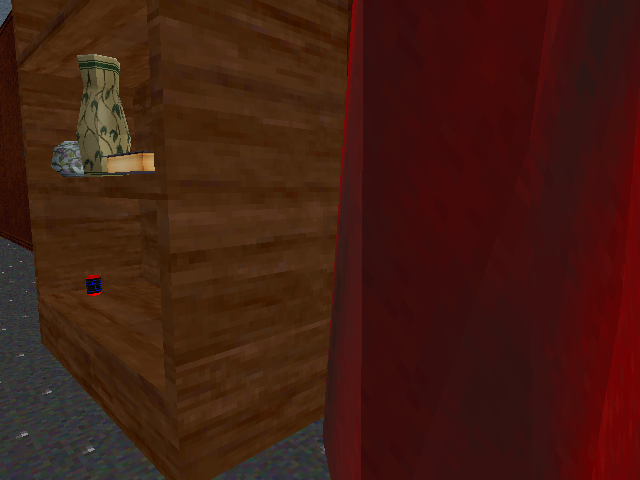

Diff — real diff -u output this picture is generated from (diffs/unatco_widen/safe.diff)
--- before/t1_safe +++ after/t1_safe @@ -1,55 +1,55 @@ Brush766: 8 vertices coord polys refs -(448,144,304) 0,3,5 3 -(512,144,304) 0,3,4 3 -(512,192,304) 0,2,4 3 -(448,192,304) 0,2,5 3 -(448,192,240) 1,2,5 3 -(512,192,240) 1,2,4 3 -(512,144,240) 1,3,4 3 -(448,144,240) 1,3,5 3 +(496,144,304) 0,3,5 3 +(560,144,304) 0,3,4 3 +(560,192,304) 0,2,4 3 +(496,192,304) 0,2,5 3 +(496,192,240) 1,2,5 3 +(560,192,240) 1,2,4 3 +(560,144,240) 1,3,4 3 +(496,144,240) 1,3,5 3 Brush364: 8 vertices coord polys refs -(462,96,304) 0,3,5 3 -(464,96,304) 0,3,4 3 -(464,144,304) 0,2,4 3 -(462,144,304) 0,2,5 3 -(462,144,240) 1,2,5 3 -(464,144,240) 1,2,4 3 -(464,96,240) 1,3,4 3 -(462,96,240) 1,3,5 3 +(510,96,304) 0,3,5 3 +(512,96,304) 0,3,4 3 +(512,144,304) 0,2,4 3 +(510,144,304) 0,2,5 3 +(510,144,240) 1,2,5 3 +(512,144,240) 1,2,4 3 +(512,96,240) 1,3,4 3 +(510,96,240) 1,3,5 3 Brush873: 8 vertices coord polys refs -(462,144,304) 0,2,4 3 -(464,144,304) 0,2,3 3 -(464,192,304) 0,1,3 3 -(462,192,304) 0,1,4 3 -(464,192,240) 1,3,5 3 -(462,192,240) 1,4,5 3 -(462,144,240) 2,4,5 3 -(464,144,240) 2,3,5 3 +(510,144,304) 0,2,4 3 +(512,144,304) 0,2,3 3 +(512,192,304) 0,1,3 3 +(510,192,304) 0,1,4 3 +(512,192,240) 1,3,5 3 +(510,192,240) 1,4,5 3 +(510,144,240) 2,4,5 3 +(512,144,240) 2,3,5 3 Brush592: 8 vertices coord polys refs -(480,160,304) 0,3,5 3 -(496,160,304) 0,3,4 3 -(496,176,304) 0,2,4 3 -(480,176,304) 0,2,5 3 -(480,176,302) 1,2,5 3 -(496,176,302) 1,2,4 3 -(496,160,302) 1,3,4 3 -(480,160,302) 1,3,5 3 +(528,160,304) 0,3,5 3 +(544,160,304) 0,3,4 3 +(544,176,304) 0,2,4 3 +(528,176,304) 0,2,5 3 +(528,176,302) 1,2,5 3 +(544,176,302) 1,2,4 3 +(544,160,302) 1,3,4 3 +(528,160,302) 1,3,5 3 -Light149: (X=492.409241,Y=168.943359,Z=268.111969) +Light149: (X=540.409241,Y=168.943359,Z=268.111969) -Vase3: (X=419.023926,Y=149.58667,Z=307.277863) +Vase3: (X=467.023926,Y=149.58667,Z=307.277863) -Vase4: (X=418.817749,Y=127.481689,Z=298.105835) +Vase4: (X=466.817749,Y=127.481689,Z=298.105835) -BookClosed1: (X=417.38678,Y=184.704102,Z=294.449219) +BookClosed1: (X=465.38678,Y=184.704102,Z=294.449219) -NanoKey0: (X=418.849182,Y=132.576111,Z=260.546539) +NanoKey0: (X=466.849182,Y=132.576111,Z=260.546539) -WeaponModRecoil0: (X=496.843567,Y=174.866135,Z=244.520432) +WeaponModRecoil0: (X=544.843567,Y=174.866135,Z=244.520432)
Two flagpoles stand in opposite corners of the room, anchored to DIFFERENT wall volumes: FlagPole3 to the north wall (Brush420), FlagPole4 to the south wall (Brush418). Each must move with its own corner's wall.
![[CORRECT] Two flagpoles stand in opposite corners of the room, anchored to DIFFERENT wall volumes: FlagPole3 to the north wall (Brush420), FlagPole4 to the south wall (Brush418). Each must move with its own corner's wall. (highlighted: FlagPole3, FlagPole4)](img/unatco_widen/flags.png)

Diff — real diff -u output this picture is generated from (diffs/unatco_widen/flags.diff)
--- before/t1_flags +++ after/t1_flags @@ -1,3 +1,3 @@ -FlagPole3: (X=400.648621,Y=258.481842,Z=296.487823) +FlagPole3: (X=448.648621,Y=258.481842,Z=296.487823) -FlagPole4: (X=394.551422,Y=-250.041565,Z=296.491394) +FlagPole4: (X=442.551422,Y=-250.041565,Z=296.491394)
This niche is a genuinely separate small room built against the south wall volume (Brush418), not part of the wall itself. It must move so it stays flush against it.
![[CORRECT] This niche is a genuinely separate small room built against the south wall volume (Brush418), not part of the wall itself. It must move so it stays flush against it. (highlighted: Brush663, Brush1, Brush138, Brush140, Brush148, Brush164, Brush168, Brush1158, Brush1550, Brush1551, OrdersTrigger5, Light6)](img/unatco_widen/niche.png)
Diff — real diff -u output this picture is generated from (diffs/unatco_widen/niche.diff)
--- before/t1_niche +++ after/t1_niche @@ -1,141 +1,141 @@ Brush663: 8 vertices coord polys refs -(552,48,416) 0,3,5 3 -(448,48,416) 0,3,4 3 -(448,-64,416) 0,2,4 3 -(552,-64,416) 0,2,5 3 -(552,-64,240) 1,2,5 3 -(448,-64,240) 1,2,4 3 -(448,48,240) 1,3,4 3 -(552,48,240) 1,3,5 3 +(600,48,416) 0,3,5 3 +(496,48,416) 0,3,4 3 +(496,-64,416) 0,2,4 3 +(600,-64,416) 0,2,5 3 +(600,-64,240) 1,2,5 3 +(496,-64,240) 1,2,4 3 +(496,48,240) 1,3,4 3 +(600,48,240) 1,3,5 3 Brush1: 26 vertices coord polys refs -(470,-8,264) 0,7,8,15 4 -(462,-8,252) 0,7,24,31 4 -(471.372484,-30.627401,252) 0,1,24,25 4 -(477.029381,-24.970502,264) 0,1,8,9 4 -(494,-40,252) 1,2,25,26 4 -(494,-32,264) 1,2,9,10 4 -(516.627384,-30.627397,252) 2,3,26,27 4 -(510.970482,-24.970499,264) 2,3,10,11 4 -(526,-8,252) 3,4,27,28 4 -(518,-8,264) 3,4,11,12 4 -(516.62738,14.627503,252) 4,5,28,29 4 -(510.970479,8.970602,264) 4,5,12,13 4 -(494,24,252) 5,6,29,30 4 -(494,16,264) 5,6,13,14 4 -(471.37248,14.627499,252) 6,7,30,31 4 -(477.029378,8.970599,264) 6,7,14,15 4 -(494,-8,264) 8,9,10,11,12,13,14,15 8 -(462,-8,240) 16,23,24,31 4 -(494,-8,240) 16,17,18,19,20,21,22,23 8 -(471.372484,-30.627401,240) 16,17,24,25 4 -(494,-40,240) 17,18,25,26 4 -(516.627384,-30.627397,240) 18,19,26,27 4 -(526,-8,240) 19,20,27,28 4 -(516.62738,14.627503,240) 20,21,28,29 4 -(494,24,240) 21,22,29,30 4 -(471.37248,14.627499,240) 22,23,30,31 4 +(518,-8,264) 0,7,8,15 4 +(510,-8,252) 0,7,24,31 4 +(519.372484,-30.627401,252) 0,1,24,25 4 +(525.029381,-24.970502,264) 0,1,8,9 4 +(542,-40,252) 1,2,25,26 4 +(542,-32,264) 1,2,9,10 4 +(564.627384,-30.627397,252) 2,3,26,27 4 +(558.970482,-24.970499,264) 2,3,10,11 4 +(574,-8,252) 3,4,27,28 4 +(566,-8,264) 3,4,11,12 4 +(564.62738,14.627503,252) 4,5,28,29 4 +(558.970479,8.970602,264) 4,5,12,13 4 +(542,24,252) 5,6,29,30 4 +(542,16,264) 5,6,13,14 4 +(519.37248,14.627499,252) 6,7,30,31 4 +(525.029378,8.970599,264) 6,7,14,15 4 +(542,-8,264) 8,9,10,11,12,13,14,15 8 +(510,-8,240) 16,23,24,31 4 +(542,-8,240) 16,17,18,19,20,21,22,23 8 +(519.372484,-30.627401,240) 16,17,24,25 4 +(542,-40,240) 17,18,25,26 4 +(564.627384,-30.627397,240) 18,19,26,27 4 +(574,-8,240) 19,20,27,28 4 +(564.62738,14.627503,240) 20,21,28,29 4 +(542,24,240) 21,22,29,30 4 +(519.37248,14.627499,240) 22,23,30,31 4 Brush138: 18 vertices coord polys refs -(474,-8,264) 0,7,8,15 4 -(474,-8,260) 0,7,16,23 4 -(479.857901,-22.142101,260) 0,1,16,17 4 -(479.857901,-22.142101,264) 0,1,8,9 4 -(494,-28,260) 1,2,17,18 4 -(494,-28,264) 1,2,9,10 4 -(508.142201,-22.142099,260) 2,3,18,19 4 -(508.142201,-22.142099,264) 2,3,10,11 4 -(514,-8,260) 3,4,19,20 4 -(514,-8,264) 3,4,11,12 4 -(508.142199,6.142201,260) 4,5,20,21 4 -(508.142199,6.142201,264) 4,5,12,13 4 -(494,12,260) 5,6,21,22 4 -(494,12,264) 5,6,13,14 4 -(479.857899,6.142199,260) 6,7,22,23 4 -(479.857899,6.142199,264) 6,7,14,15 4 -(494,-8,264) 8,9,10,11,12,13,14,15 8 -(494,-8,260) 16,17,18,19,20,21,22,23 8 +(522,-8,264) 0,7,8,15 4 +(522,-8,260) 0,7,16,23 4 +(527.857901,-22.142101,260) 0,1,16,17 4 +(527.857901,-22.142101,264) 0,1,8,9 4 +(542,-28,260) 1,2,17,18 4 +(542,-28,264) 1,2,9,10 4 +(556.142201,-22.142099,260) 2,3,18,19 4 +(556.142201,-22.142099,264) 2,3,10,11 4 +(562,-8,260) 3,4,19,20 4 +(562,-8,264) 3,4,11,12 4 +(556.142199,6.142201,260) 4,5,20,21 4 +(556.142199,6.142201,264) 4,5,12,13 4 +(542,12,260) 5,6,21,22 4 +(542,12,264) 5,6,13,14 4 +(527.857899,6.142199,260) 6,7,22,23 4 +(527.857899,6.142199,264) 6,7,14,15 4 +(542,-8,264) 8,9,10,11,12,13,14,15 8 +(542,-8,260) 16,17,18,19,20,21,22,23 8 Brush140: 8 vertices coord polys refs -(536.001221,0,280) 0,3,5 3 -(518.001221,0,264) 0,3,4 3 -(518.001222,-16,264) 0,2,4 3 -(536.001222,-16,280) 0,2,5 3 -(536.001222,-16,276) 1,2,5 3 -(518.001222,-16,260) 1,2,4 3 -(518.001221,0,260) 1,3,4 3 -(536.001221,0,276) 1,3,5 3 +(584.001221,0,280) 0,3,5 3 +(566.001221,0,264) 0,3,4 3 +(566.001222,-16,264) 0,2,4 3 +(584.001222,-16,280) 0,2,5 3 +(584.001222,-16,276) 1,2,5 3 +(566.001222,-16,260) 1,2,4 3 +(566.001221,0,260) 1,3,4 3 +(584.001221,0,276) 1,3,5 3 Brush148: 8 vertices coord polys refs -(540,0,284) 0,3,5 3 -(536,0,288) 0,3,4 3 -(536,-16,288) 0,2,4 3 -(540,-16,284) 0,2,5 3 -(540,-16,280) 1,2,5 3 -(536,-16,276) 1,2,4 3 -(536,0,276) 1,3,4 3 -(540,0,280) 1,3,5 3 +(588,0,284) 0,3,5 3 +(584,0,288) 0,3,4 3 +(584,-16,288) 0,2,4 3 +(588,-16,284) 0,2,5 3 +(588,-16,280) 1,2,5 3 +(584,-16,276) 1,2,4 3 +(584,0,276) 1,3,4 3 +(588,0,280) 1,3,5 3 Brush164: 8 vertices coord polys refs -(486,34,280) 0,3,5 3 -(486,16,264) 0,3,4 3 -(502,16,264) 0,2,4 3 -(502,34,280) 0,2,5 3 -(502,34,276) 1,2,5 3 -(502,16,260) 1,2,4 3 -(486,16,260) 1,3,4 3 -(486,34,276) 1,3,5 3 +(534,34,280) 0,3,5 3 +(534,16,264) 0,3,4 3 +(550,16,264) 0,2,4 3 +(550,34,280) 0,2,5 3 +(550,34,276) 1,2,5 3 +(550,16,260) 1,2,4 3 +(534,16,260) 1,3,4 3 +(534,34,276) 1,3,5 3 Brush168: 8 vertices coord polys refs -(486,38,284) 0,3,5 3 -(486,34,288) 0,3,4 3 -(502,34,288) 0,2,4 3 -(502,38,284) 0,2,5 3 -(502,38,280) 1,2,5 3 -(502,34,276) 1,2,4 3 -(486,34,276) 1,3,4 3 -(486,38,280) 1,3,5 3 +(534,38,284) 0,3,5 3 +(534,34,288) 0,3,4 3 +(550,34,288) 0,2,4 3 +(550,38,284) 0,2,5 3 +(550,38,280) 1,2,5 3 +(550,34,276) 1,2,4 3 +(534,34,276) 1,3,4 3 +(534,38,280) 1,3,5 3 Brush1158: 8 vertices coord polys refs -(508,8,282) 0,3,5 3 -(476,8,282) 0,3,4 3 -(476,-24,282) 0,2,4 3 -(508,-24,282) 0,2,5 3 -(508,-24,280) 1,2,5 3 -(476,-24,280) 1,2,4 3 -(476,8,280) 1,3,4 3 -(508,8,280) 1,3,5 3 +(556,8,282) 0,3,5 3 +(524,8,282) 0,3,4 3 +(524,-24,282) 0,2,4 3 +(556,-24,282) 0,2,5 3 +(556,-24,280) 1,2,5 3 +(524,-24,280) 1,2,4 3 +(524,8,280) 1,3,4 3 +(556,8,280) 1,3,5 3 Brush1550: 8 vertices coord polys refs -(502.001282,-50,280) 0,3,5 3 -(502.001281,-32,264) 0,3,4 3 -(486.001281,-32,264) 0,2,4 3 -(486.001282,-50,280) 0,2,5 3 -(486.001282,-50,276) 1,2,5 3 -(486.001281,-32,260) 1,2,4 3 -(502.001281,-32,260) 1,3,4 3 -(502.001282,-50,276) 1,3,5 3 +(550.001282,-50,280) 0,3,5 3 +(550.001281,-32,264) 0,3,4 3 +(534.001281,-32,264) 0,2,4 3 +(534.001282,-50,280) 0,2,5 3 +(534.001282,-50,276) 1,2,5 3 +(534.001281,-32,260) 1,2,4 3 +(550.001281,-32,260) 1,3,4 3 +(550.001282,-50,276) 1,3,5 3 Brush1551: 8 vertices coord polys refs -(502,-53.998116,284) 0,3,5 3 -(502,-49.998116,288) 0,3,4 3 -(486,-49.998117,288) 0,2,4 3 -(486,-53.998117,284) 0,2,5 3 -(486,-53.998117,280) 1,2,5 3 -(486,-49.998117,276) 1,2,4 3 -(502,-49.998116,276) 1,3,4 3 -(502,-53.998116,280) 1,3,5 3 +(550,-53.998116,284) 0,3,5 3 +(550,-49.998116,288) 0,3,4 3 +(534,-49.998117,288) 0,2,4 3 +(534,-53.998117,284) 0,2,5 3 +(534,-53.998117,280) 1,2,5 3 +(534,-49.998117,276) 1,2,4 3 +(550,-49.998116,276) 1,3,4 3 +(550,-53.998116,280) 1,3,5 3 -OrdersTrigger5: (X=493.156403,Y=-3.977154,Z=280.102234) +OrdersTrigger5: (X=541.156403,Y=-3.977154,Z=280.102234) -Light6: (X=492.866974,Y=-9.072319,Z=307.783691) +Light6: (X=540.866974,Y=-9.072319,Z=307.783691)
Trial results — graded runs (auto-discovered from runs/) — click to expand
Subject trunk: /home/agent/.claude/jobs/92851c21/tmp/unatco_t1wall_bad
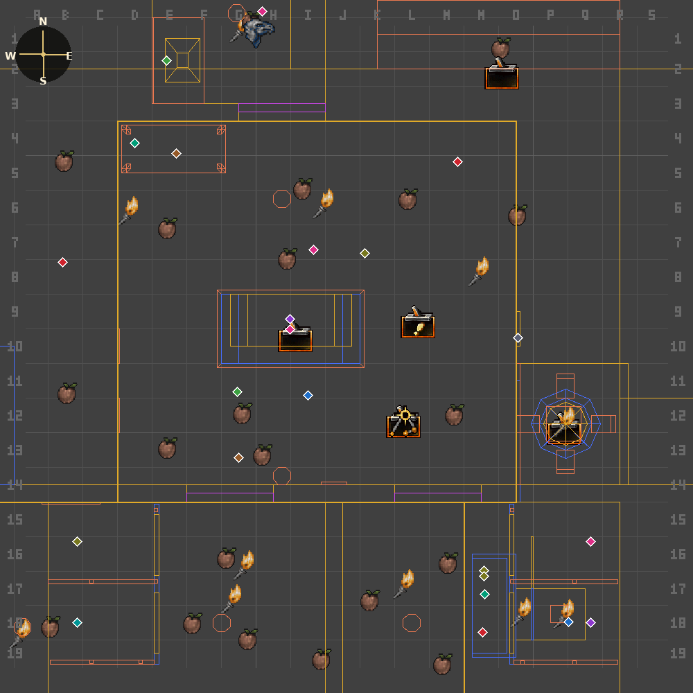
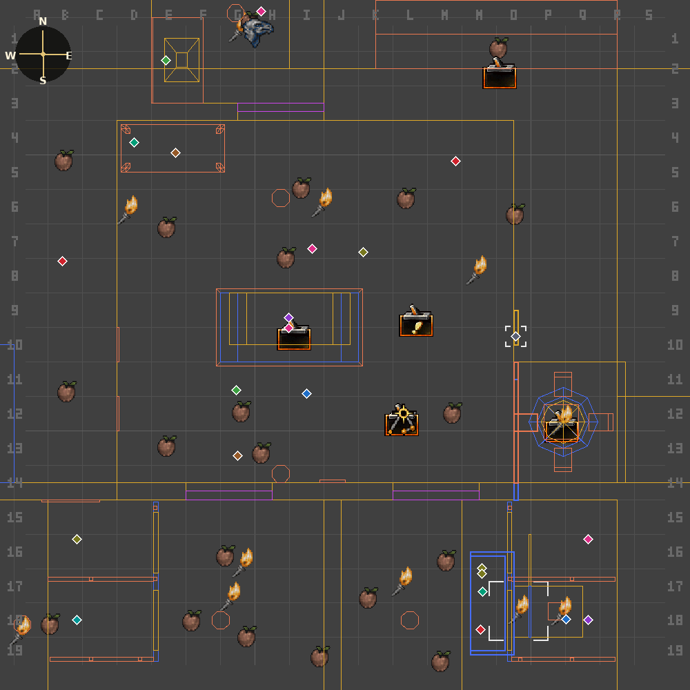
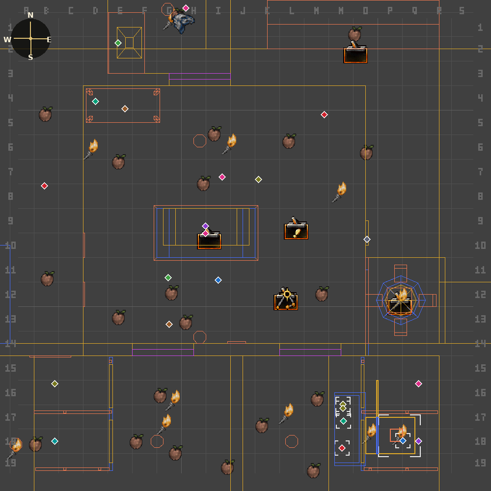
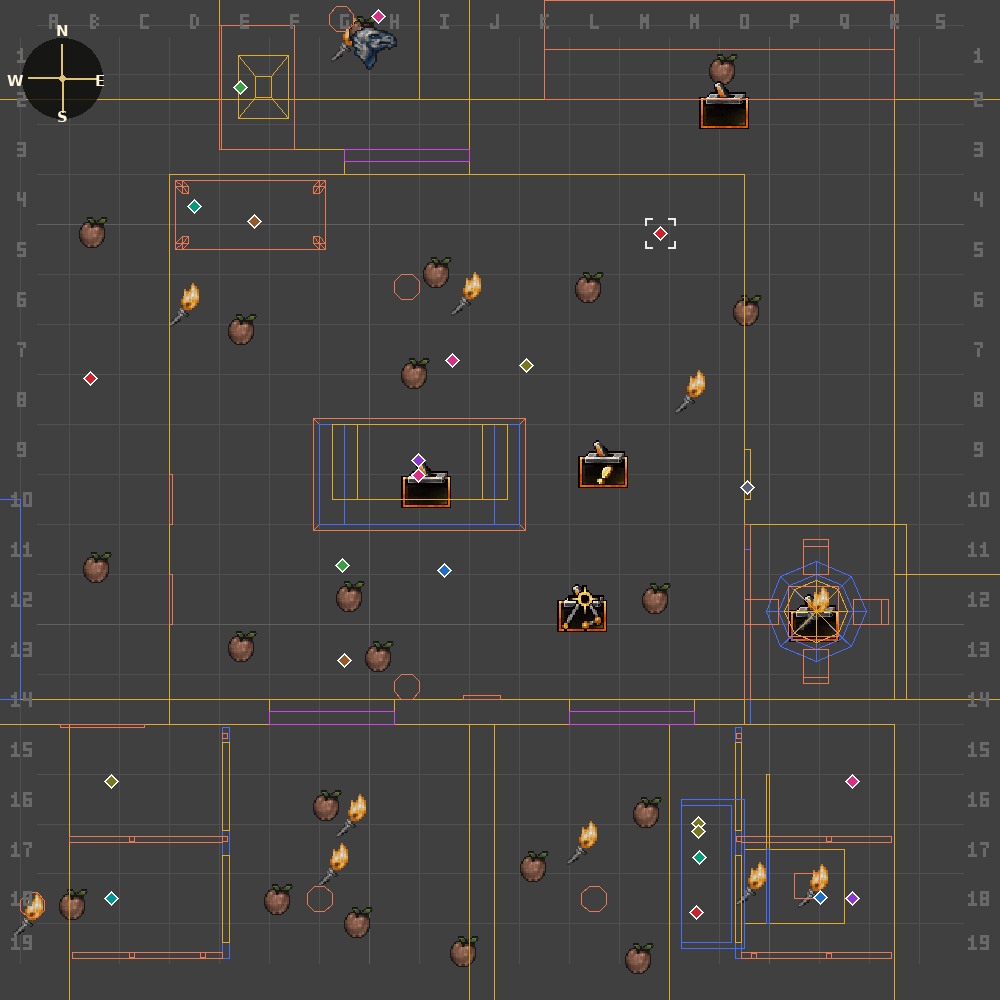
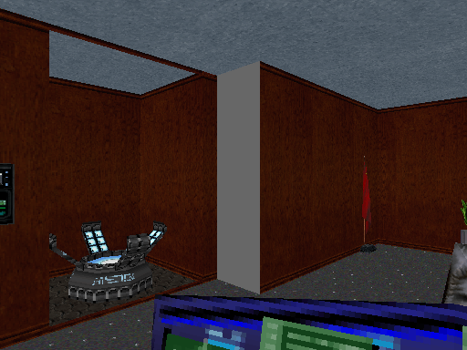
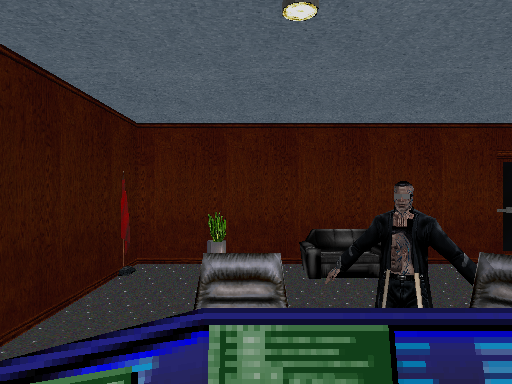

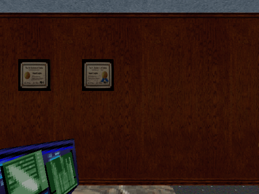


| actor | role | verdict | why (if failed) |
|---|---|---|---|
| BookClosed1 | anchor(to Brush420) | touched_wrong | display item on the shelf |
| Brush364 | anchor(to Brush420) | touched_wrong | the safe's own interior geometry inside the cavity |
| Brush420 | update(corners) | wrong | north wall of Manderley's office, shares the east wall with Brush418 at the y=64 seam -- must widen the same amount or the wall steps |
| Brush592 | anchor(to Brush420) | touched_wrong | the display shelf inside the cavity |
| Brush766 | anchor(to Brush420) | touched_wrong | wall cavity holding the trophy shelf + hidden safe, cut into the north wall |
| Brush869 | anchor(to Brush420) | touched_wrong | decorative pilaster on the north wall |
| Brush873 | anchor(to Brush420) | touched_wrong | the safe's own back panel inside the cavity -- moving the cavity without this orphans it mid-room (the original bug this eval caught) |
| FlagPole3 | anchor(to Brush420) | touched_wrong | ceremonial flagpole anchored to the north wall's corner (~48u off two adjacent walls, not flush-mounted) |
| Light14 | anchor(to Brush420) | touched_wrong | the pilaster's own light |
| Light149 | anchor(to Brush420) | touched_wrong | the shelf's own light |
| NanoKey0 | anchor(to Brush420) | touched_wrong | display item on the shelf |
| Vase3 | anchor(to Brush420) | touched_wrong | display item on the shelf |
| Vase4 | anchor(to Brush420) | touched_wrong | display item on the shelf |
| WeaponModRecoil0 | anchor(to Brush420) | touched_wrong | display item on the shelf |
| Brush1 | anchor(to Brush418) | correct | |
| Brush1158 | anchor(to Brush418) | correct | |
| Brush132 | anchor(to Brush418) | correct | |
| Brush138 | anchor(to Brush418) | correct | |
| Brush140 | anchor(to Brush418) | correct | |
| Brush148 | anchor(to Brush418) | correct | |
| Brush152 | anchor(to Brush418) | correct | |
| Brush1550 | anchor(to Brush418) | correct | |
| Brush1551 | anchor(to Brush418) | correct | |
| Brush161 | anchor(to Brush418) | correct | |
| Brush164 | anchor(to Brush418) | correct | |
| Brush168 | anchor(to Brush418) | correct | |
| Brush203 | anchor(to Brush418) | correct | |
| Brush418 | update(corners) | correct | |
| Brush663 | anchor(to Brush418) | correct | |
| Brush670 | anchor(to Brush418) | correct | |
| Brush74 | anchor(to Brush418) | correct | |
| FlagPole4 | anchor(to Brush418) | correct | |
| Light6 | anchor(to Brush418) | correct | |
| OrdersTrigger5 | anchor(to Brush418) | correct | |
| Switch6 | anchor(to Brush418) | correct |
Subject trunk: /home/agent/.claude/jobs/92851c21/tmp/diff_trunks2/t1
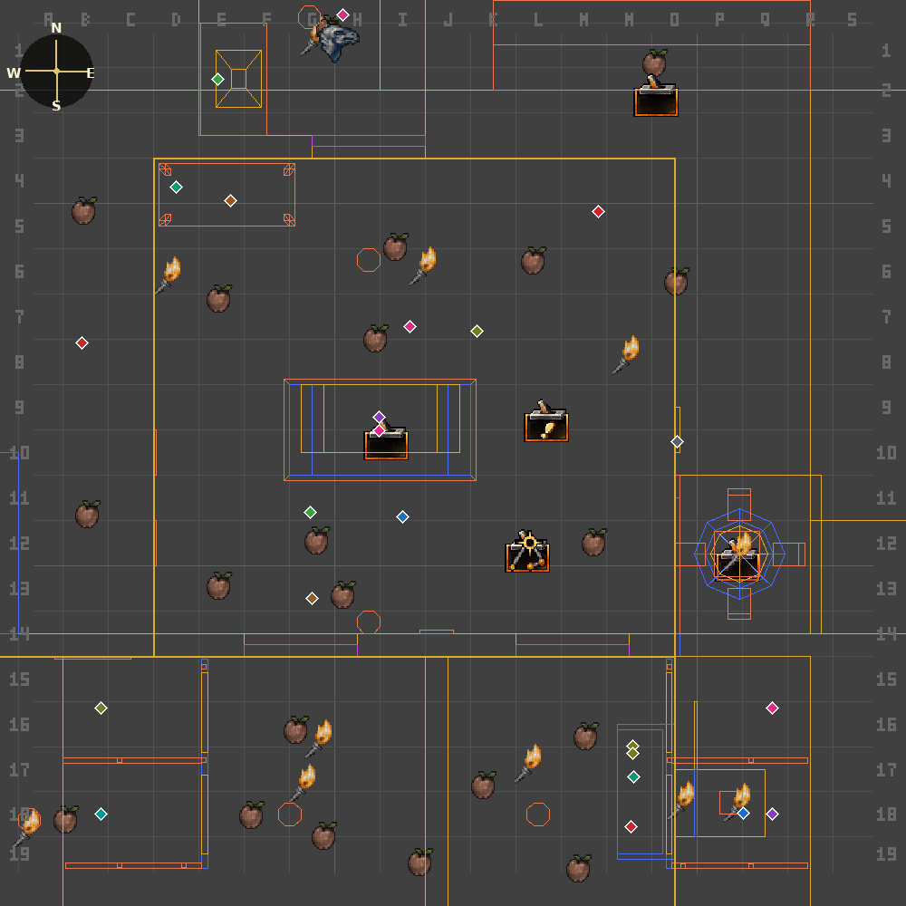
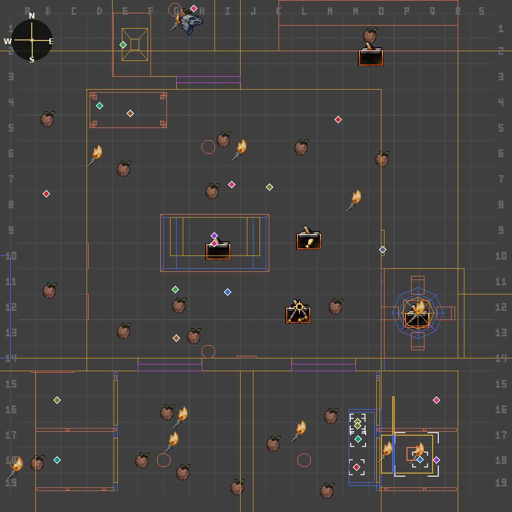
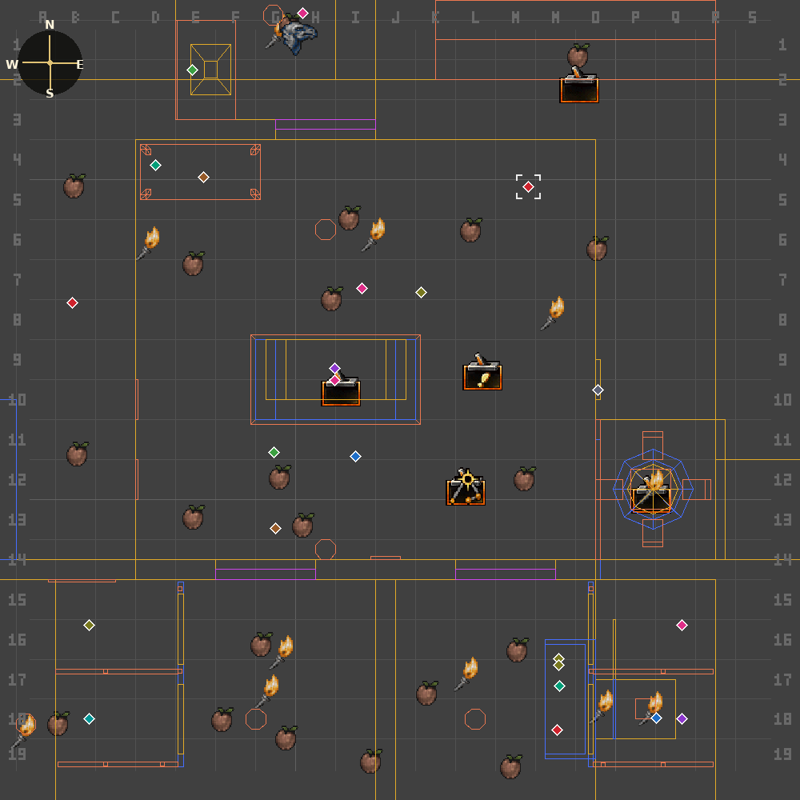

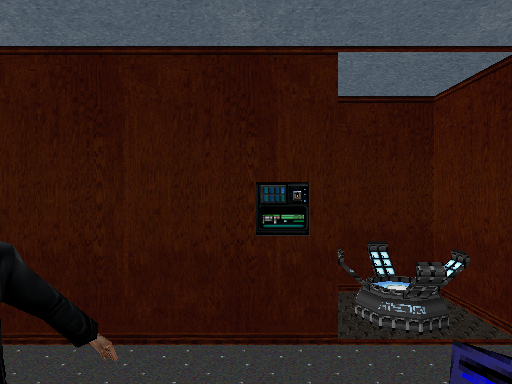

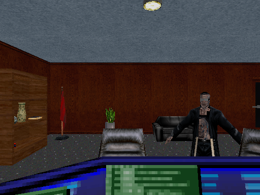
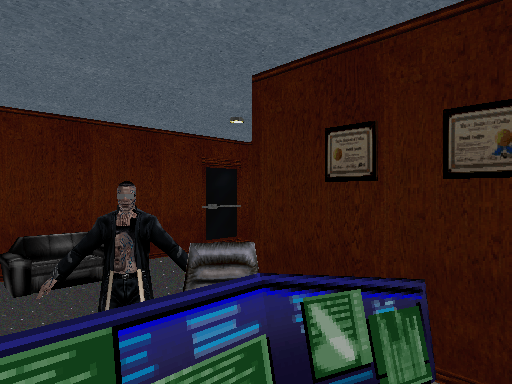


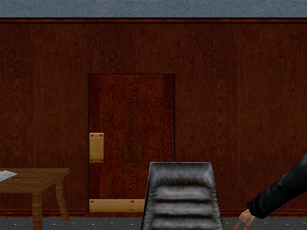

| actor | role | verdict | why (if failed) |
|---|---|---|---|
| BookClosed1 | anchor(to Brush420) | correct | |
| Brush1 | anchor(to Brush418) | correct | |
| Brush1158 | anchor(to Brush418) | correct | |
| Brush132 | anchor(to Brush418) | correct | |
| Brush138 | anchor(to Brush418) | correct | |
| Brush140 | anchor(to Brush418) | correct | |
| Brush148 | anchor(to Brush418) | correct | |
| Brush152 | anchor(to Brush418) | correct | |
| Brush1550 | anchor(to Brush418) | correct | |
| Brush1551 | anchor(to Brush418) | correct | |
| Brush161 | anchor(to Brush418) | correct | |
| Brush164 | anchor(to Brush418) | correct | |
| Brush168 | anchor(to Brush418) | correct | |
| Brush203 | anchor(to Brush418) | correct | |
| Brush364 | anchor(to Brush420) | correct | |
| Brush418 | update(corners) | correct | |
| Brush420 | update(corners) | correct | |
| Brush592 | anchor(to Brush420) | correct | |
| Brush663 | anchor(to Brush418) | correct | |
| Brush670 | anchor(to Brush418) | correct | |
| Brush74 | anchor(to Brush418) | correct | |
| Brush766 | anchor(to Brush420) | correct | |
| Brush869 | anchor(to Brush420) | correct | |
| Brush873 | anchor(to Brush420) | correct | |
| FlagPole3 | anchor(to Brush420) | correct | |
| FlagPole4 | anchor(to Brush418) | correct | |
| Light14 | anchor(to Brush420) | correct | |
| Light149 | anchor(to Brush420) | correct | |
| Light6 | anchor(to Brush418) | correct | |
| NanoKey0 | anchor(to Brush420) | correct | |
| OrdersTrigger5 | anchor(to Brush418) | correct | |
| Switch6 | anchor(to Brush418) | correct | |
| Vase3 | anchor(to Brush420) | correct | |
| Vase4 | anchor(to Brush420) | correct | |
| WeaponModRecoil0 | anchor(to Brush420) | correct |
Batch 1 = UNATCO HQ (2 tasks), swept exhaustively — every actor within a wide margin of the moved geometry individually classified, each assigned its OWN anchor by verified geometry (some fixtures split across both wall volumes). Remaining: NYC_Bar, WanChai Market, OceanLab, + one more, each with the same pipeline. Diagrams: actor diagram, cropped to the room this task edits (not the whole level). Photos: level photo --native --faces textured; procedural FX skins render solid red.